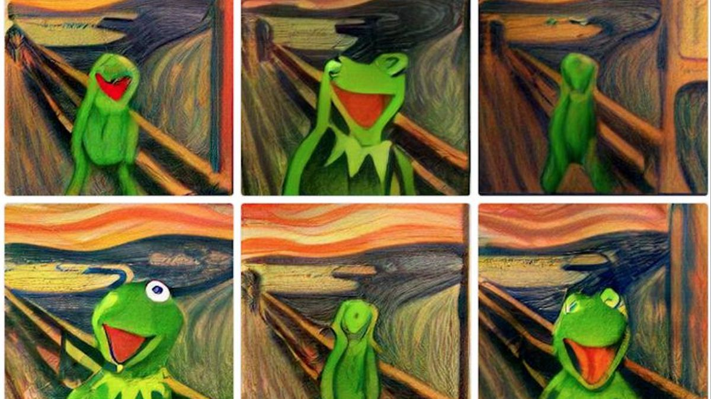

Amazon vende la mitad de su compañia al estado de Chiapas

La reconocidad compañia Amazon se encuentra en una de sus peores etapas de venta, en los ultimos 2 años su peridodo fiscal han sido establecidos los peores desde su fundacion en 1530 por lo que se fue obligado a vender sus acciones al mejor postor que termino siendo el estado de la republica mexicana Chiapas.
Bar "Cyberpunk" en Xalapa
Una extraña imagen invadio las redes sociales al ser bastante llamativa y algo extraña, debido a esto se hizo una busqueda para dar con el origen de la foto que termino siendo un bar en Xalapa debido a la tematica tan extravagante que esta maneja se dio este conjunto de personalidades.
La rana Rene en un robo artistico

El famoso personaje de progrmaas infatiles Kermit o mejor conocido en latinoamerica como la rana Rene protagonizo un robo al ser cambiado por la famosa pintura "El grito", no se conocen mas detalles del robo solo la pintura que se intercambio.